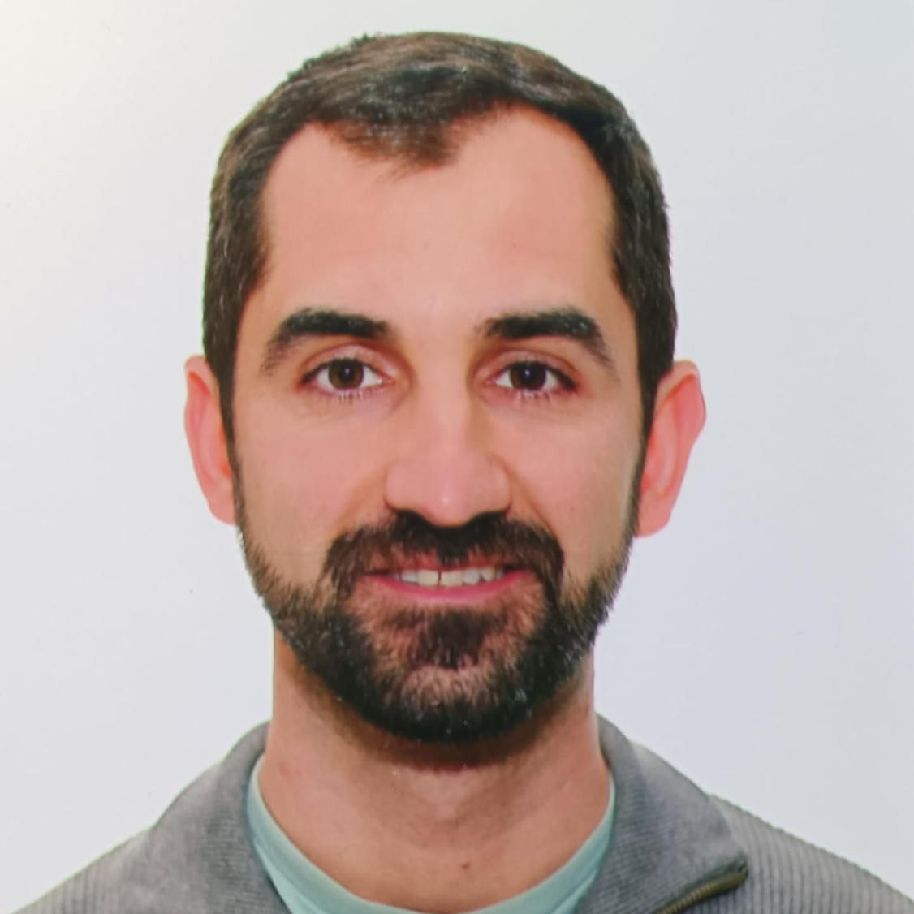

Angel Soto Boullosa
Software (SW) and Firmware (FW) Engineer
My Curriculum
You can view my full CV in the following link:
View CurriculumOr if you prefer, you can download it directly:
Download CVAbout Me
I am an engineer specialized in electronics, embedded systems and software development. I value honesty, reliability and continuous improvement. I enjoy designing modular, scalable and maintainable systems that combine firmware, hardware and communication protocols.
Currently, I work at Inster – Grupo Oesía, where I develop embedded software for telecommunications equipment with military-grade requirements. I'm also exploring personal projects in robotics, automation and self-hosted systems.
Technologies & Tools
- Programming: C, Python, Shell scripting, C++
- Platforms: ESP32, STM32 (ARM Cortex-M), PIC18, AVR
- OS / Frameworks: Linux, FreeRTOS
- Tools: Git, VS Code, Altium, KiCad, Docker
- Communication: UART, SPI, I2C, CAN, Bluetooth
Featured Projects
- FreeRTOS ECS Template: A modular FreeRTOS template for embedded production environments based on entity-component separation.
- C Project Template: A clean, testable C template with unit testing and build automation.
Contact
You can reach me through any of the following platforms:
- Email: angelsotob@outlook.es
- LinkedIn: linkedin.com/in/angel-soto-boullosa
- GitHub: github.com/angelsotob